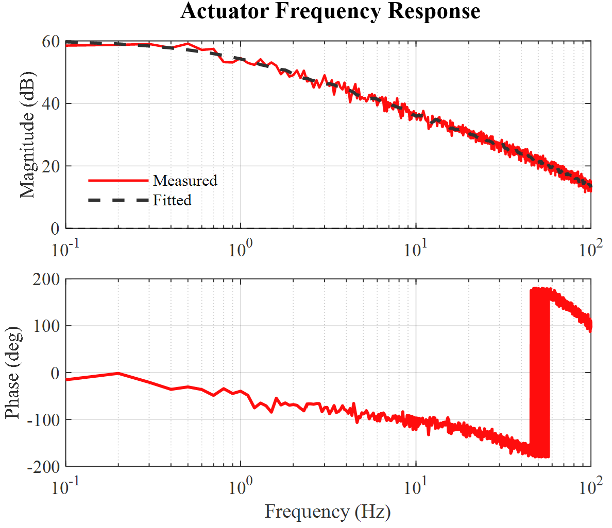
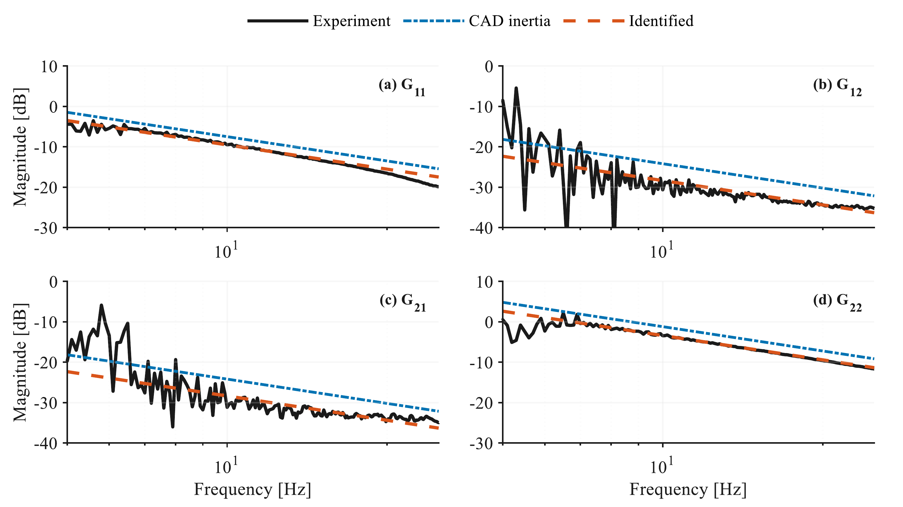
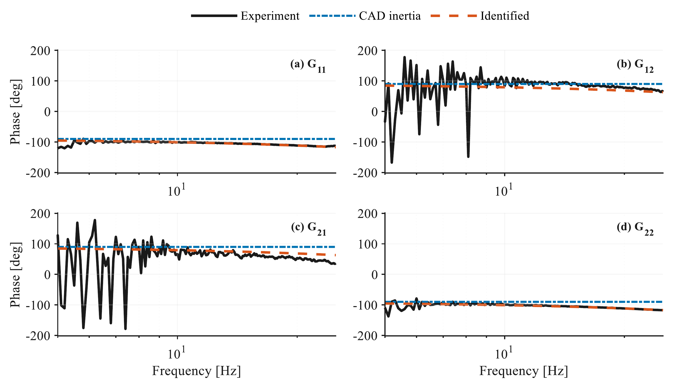
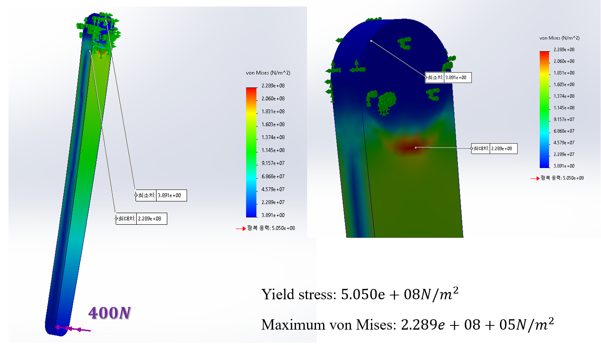
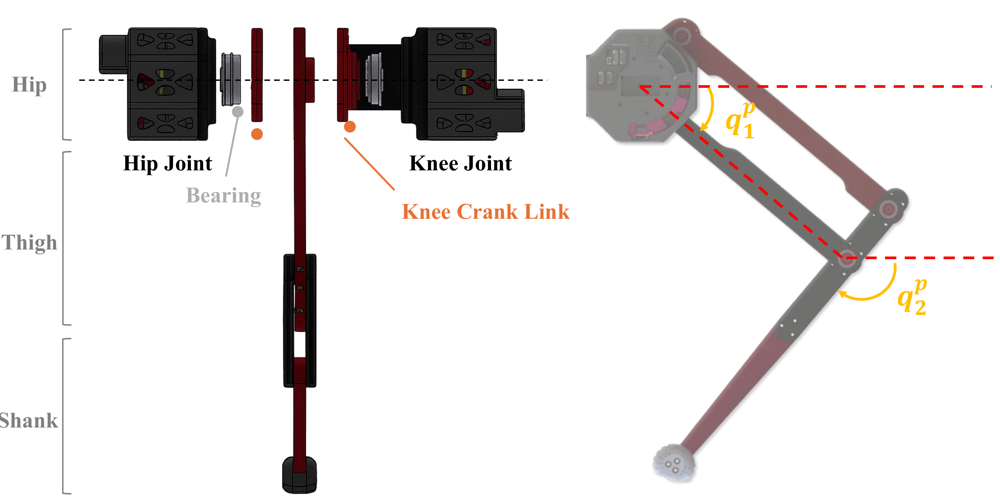
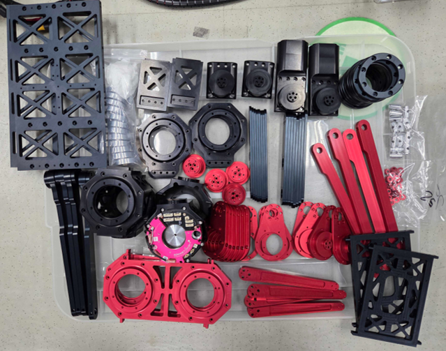
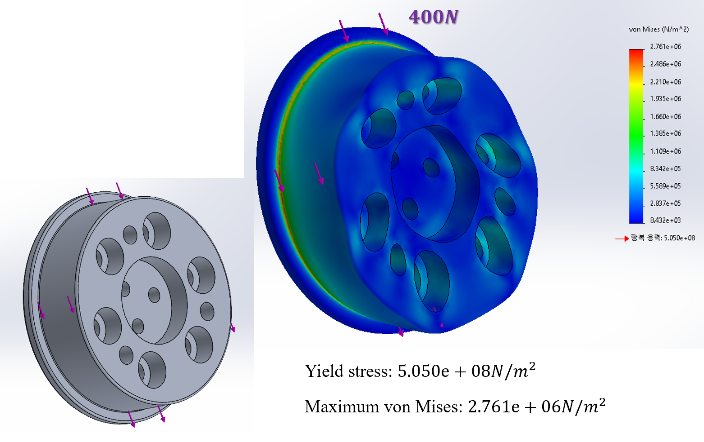
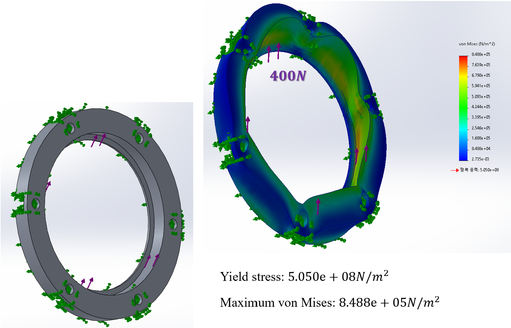

MIMO System Identification
MIMO ID SUM Excitation
Frequency-domain multi-input multi-output identification for the leg dynamics and mass matrix estimation.
Project Portfolio
Detailed project notes, design figures, analysis results, and media for my legged robotics research.
Main Project
My current work focuses on how dynamics-based low-level control can be combined with learned locomotion policies. The goal is to improve robustness under actuator mismatch, contact uncertainty, delay, and external disturbance without relying only on reward tuning.
Modeling
System identification for sim-to-real control, including MIMO identification of the leg dynamics and actuator identification of inertia, damping, and system delay.
Leg Dynamics
Multi Input Multi Output identification is used to estimate the leg dynamics, including the coupled mass matrix structure needed for model-aware low-level control.

Actuator ID
Measured and fitted actuator response used to identify actuator inertia, damping, and system delay for hardware-aware control.

Leg Dynamics
Frequency-domain magnitude response for identifying the coupled leg dynamics and validating the leg mass matrix model.

Leg Dynamics
Phase response validation for the identified MIMO leg model, including coupled off-diagonal dynamics.
MIMO System Identification
Frequency-domain multi-input multi-output identification for the leg dynamics and mass matrix estimation.
MIMO System Identification
Complementary MIMO excitation case for validating coupled leg dynamics in the frequency domain.
Actuator System Identification
Actuator-level identification of reflected inertia, damping, and system delay for hardware-aware controller design.
Design Project
This project studies the mechanical structure of a parallel-link quadruped robot platform. The design emphasizes compact actuation, load-bearing leg geometry, manufacturable components, and structural safety under representative load cases.
Leg figure PDFAnalysis

Mechanism Drawing

Fabricated Parts

Single-Leg Test
Full Robot Assembly
Final Hardware Result



Hardware RL Control
Running experiment with a reinforcement-learning locomotion controller deployed on the parallel-link legged robot platform.
Observer-Based Control
Exploring how observer-based force and disturbance estimates can serve as a structured interface between model-based feedback and learned locomotion policies.
Learning Interface
Designing experiments to compare compliance, bandwidth, safety, and recovery behavior across common action-space choices in legged RL.
Programming
Building experiment software around controller validation, data logging, simulation workflows, and hardware-in-the-loop robot testing.
Media
RL Locomotion Test
Hardware running sequence driven by a reinforcement-learning locomotion controller.
MPC Simulation
Model Predictive Control based trot gait simulation in MuJoCo for legged locomotion controller validation.
Robustness
A video slot for external push, terrain change, or actuator mismatch demonstrations.
Sim-to-Real
A video slot for side-by-side policy rollouts, ablation results, or simulation-to-hardware comparison.
Public MP4 files or YouTube links can be embedded here after the videos are ready to share.